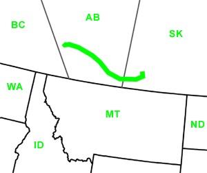

Day Thirty-Seven
Canmore, AB - Stewart Valley, SK
Date: 07/17/2002
Distance: 436 miles
Weather: Overcast high of 95.
We woke up and hit the highway. This was not difficult since we could see/hear it from our campsite. We drove East into Calgary, and stopped at the University for email. We then headed into the downtown of Calgary to sigthsee on Stephen Avenue. This street is for pedestrians only and has lots of shops and restaurants. Corin went into a Lebanese restaurant, and discovered that is was owned by the author of one of her cookbooks. The author was working at the cash register, and took Corin's order.
We drove further East and stopped in the town of Medicine Hat. This city was formed when the Canadian Pacific Railroad, drilling for water, hit natural gas. Today the streetlamps are still powered by natural gas.
The entire drive today was in the Plains region of Canada. It is window after window of flat far-reaching grasslands. It was also very hot, a good day to drive many miles. We stopped for the night outside of Swift Current, at the Saskatchewan Landing Provincial Park. This was a lovley park, and we had a fairly isolated spot near the water. There was a live concert there, and we were serenaded while we made and ate our dinner.